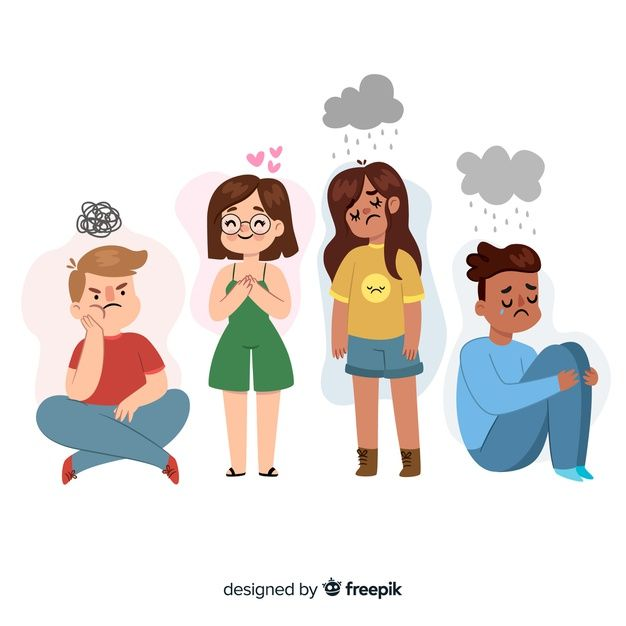

Adolescencia
La adolescencia es una etapa de transición entre la niñez y la adultez, generalmente comprendida entre los 10 y 19 años. Durante este periodo, los jóvenes experimentan importantes cambios físicos, emocionales, sociales y cognitivos.
Cambios físicos
Incluyen el crecimiento corporal, el desarrollo de caracteres sexuales secundarios y modificaciones hormonales.
Cambios emocionales y sociales
Los adolescentes desarrollan una identidad propia, buscan autonomía, enfrentan presiones sociales y comienzan a construir relaciones más complejas.
Importancia del acompañamiento
El apoyo familiar, escolar y social es clave para que los adolescentes enfrenten esta etapa con bienestar.
